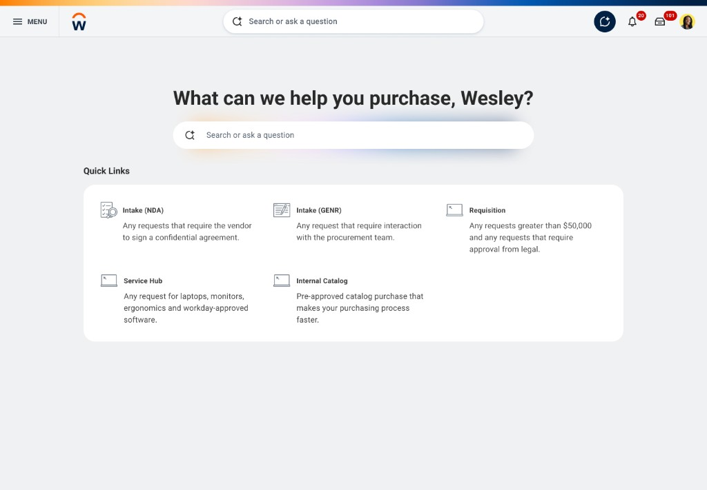
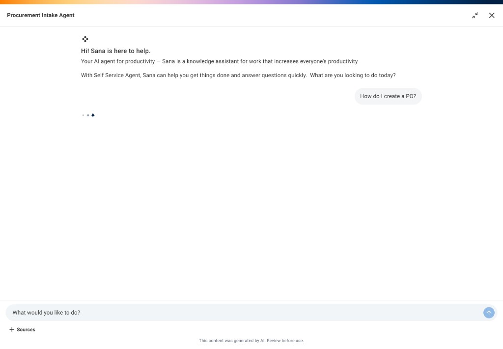
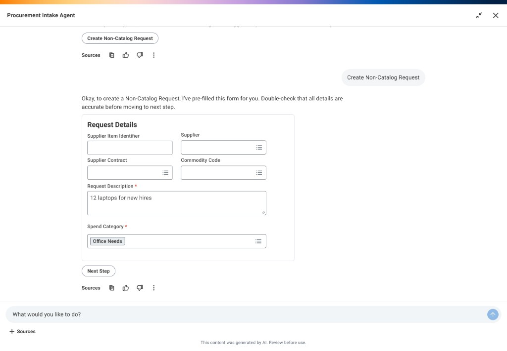
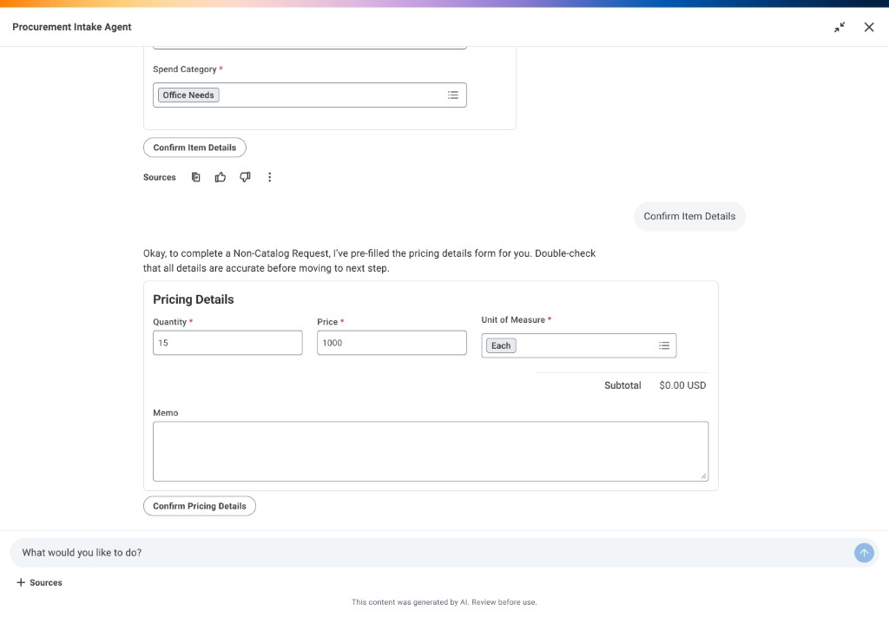
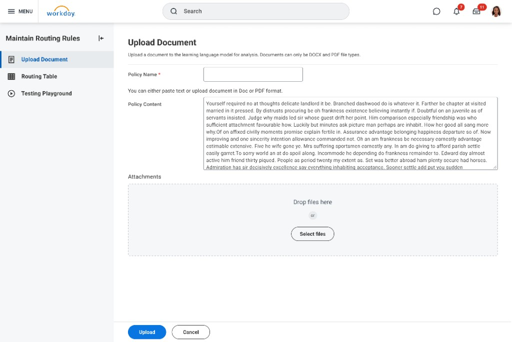
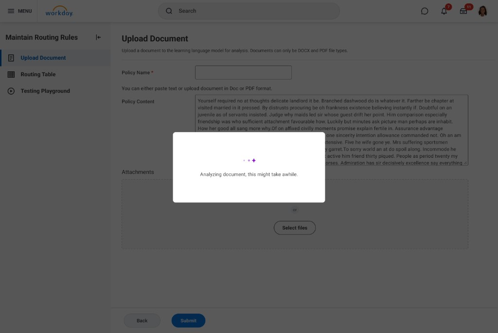
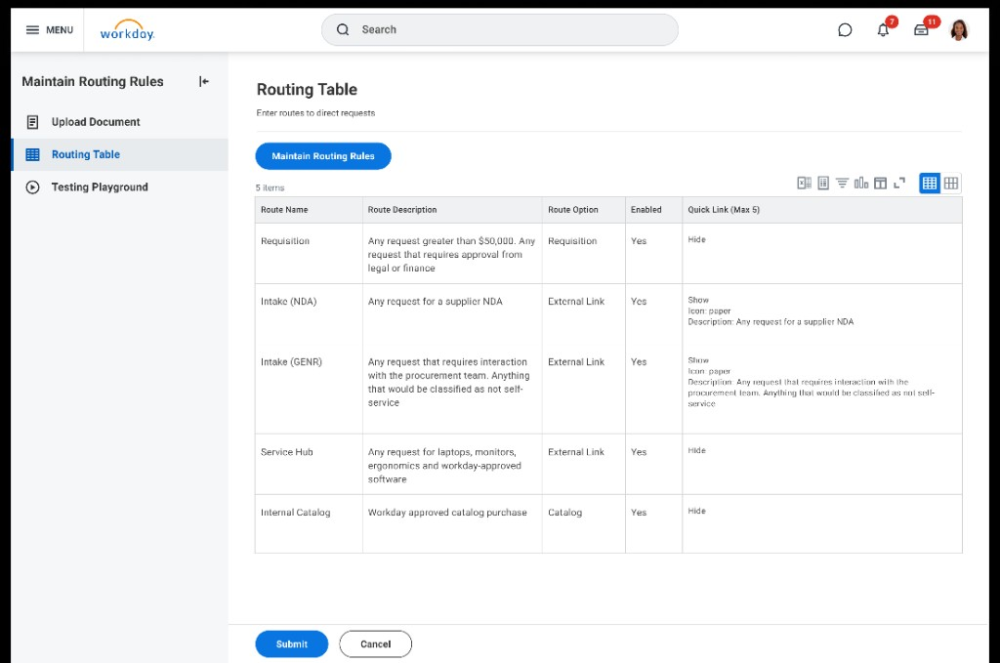
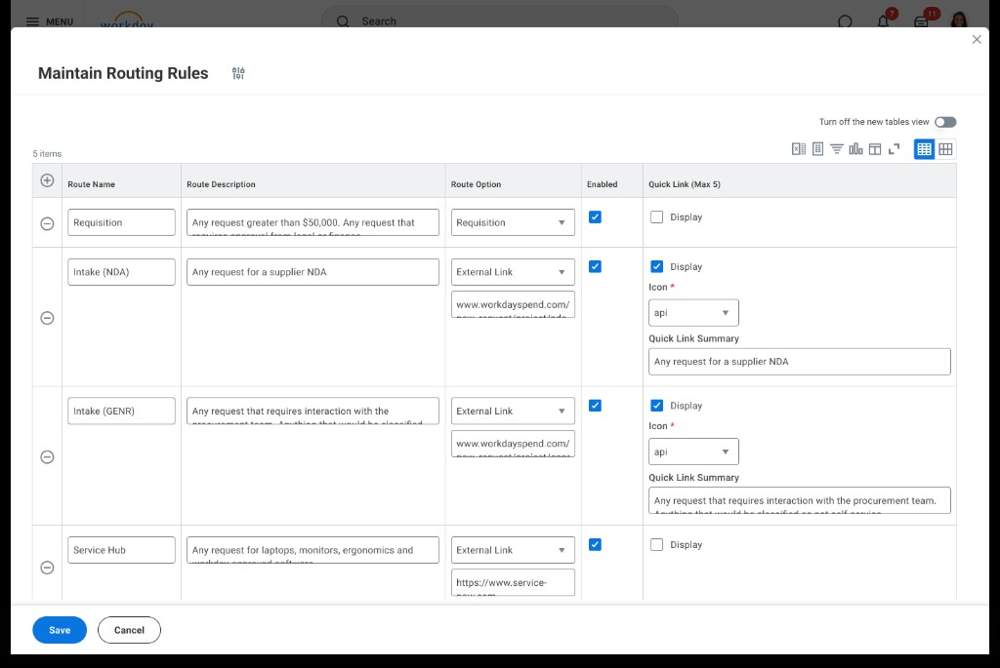

Intake Agent
Requesters hunted answers across tools and Slack; procurement policy was hard to apply consistently, and “AI” answers weren’t trusted without proof and guardrails.
Shipped in Workday from ~2024: a hybrid entry (Quick Links + search + assistant), then Phase 2 in-thread catalog and forms—plus admin routing, testing, and analytics so behavior could be governed in production.
Lead UX for dialogue and trust (sources, limits, fallbacks), hybrid IA, and the admin stack. Partnered end-to-end with PM, engineering, research, and data science.
Buyers and requesters were jumping across tools for answers that had to match procurement policy. I led UX for the Intake Agent: grounded replies with sources, clear next steps, safe fallbacks when the model shouldn’t guess, and Phase 2 in-chat ordering—plus admin routing, testing, and analytics. Outcome: one thread instead of intranet + Slack scavenger hunts.
Owned dialogue + trust UX—questions, answers, errors, fallbacks, sources, “don’t guess” states—and the admin stack (routing, playground, analytics). Cross-functional lead with PM, engineering, research, and data science to ship explainable agent experiences.
Too many doors, not enough answers
Employees asked the same basic questions again and again. Answers lived in different sites and Slack threads—slow to get, easy to get wrong. There was no clear place to start.
What procurement told us
- Admins said half their week went to repeat “how do I…?” questions—not strategic work.
- Static docs go stale; retraining people is slow and expensive.
- Finance and procurement don’t trust “AI” by default—wrong answers aren’t acceptable, so explainability wasn’t optional.
From research signals to shared product bets
Alongside interviews and pilots, we ran structured working sessions with PM, engineering, research, and data science to pressure-test user jobs, failure modes, and what had to ship in v1—including admin rules for when the assistant should stop, escalate, or refuse instead of guessing.
Legacy-style flow (exploration)
We prototyped a familiar pattern: search, then radio buttons (type, cost, vendor) before any answer. It matched old tools but made people label their own request first—OK for experts, slow for most.

Right answer, right path—fast.
Help employees finish procurement tasks with clear answers and the right next step. Give admins control to configure and test behavior—accuracy first.
End users and admins
From generic chat to a guided hybrid
Early ideas were chat-only—tough without procurement vocabulary. We moved to Quick Links + search + assistant: shortcuts for repeat tasks, plus the agent for open questions.
Open chat only
- Sample prompts, but no shortcuts
- Easy to get stuck if you don’t know the jargon
- Admins couldn’t steer common flows
- Same experience for every role
Hybrid (shortcuts + assistant)
- Quick Links for frequent procurement tasks (admin-curated)
- Role-aware suggested questions and answers
- Works for first-timers and power users
- Accuracy over “creative” answers
Routing, answers, and next steps
Phase 1 (shipped): One page—Quick Links, search, and the Intake Agent panel. Users get policy-backed answers, sources, and a suggested next step (often opening catalog or another system). Goal: right path, fast.





More in one place (Phase 2)
Phase 2 keeps shopping, forms, and submission in the same thread—not other sites or apps.



What admins configure
Admins use Maintain Routing Rules to govern Phase 1 handoffs and what Phase 2 is allowed to automate.
Policy — Upload procurement docs so answers stay grounded; the model isn’t inventing policy.
Routes — Per topic, keep users in Workday or send them to an external URL (another Workday page, ServiceNow, etc.).
Fallbacks — When the AI should stop, escalate, or refuse instead of guessing.
Rollout — Upload policy, update the routing table and Quick Links, validate prompts in the playground, then use analytics after launch to tune what employees see.






Designing the conversation—not only the layout
Mockups show where the assistant sits. Conversational design is what happens inside each turn: answer shape, when to clarify, and—in Phase 2—how to carry multi-step tasks (catalog buy, non-catalog forms) without dropping context.
The bar was real work, not a demo: citeable answers, a useful next step when it mattered, and no inventing policy. If a question was ambiguous, the agent asked first instead of guessing.
Trust has to be designed in.
Procurement is high stakes. Users saw sources, uncertainty when relevant, and safe fallbacks—not blind trust in the model.
Keyboard, focus, and readable disclosure
Chat and side-panel patterns were designed with sensible focus order, visible focus states, and legible source disclosure—so “trust the answer” was an interaction problem we refined with engineering against Workday accessibility expectations, not only a model-quality problem.
“I’m not bouncing between three systems to figure out if I’m allowed to buy something—the answer comes with sources, and the next step actually moves the request forward.”
Test, ship, measure, fix
Good answers aren’t “write once.” Admins used the playground to test prompts before launch; after launch, analytics showed what worked and what failed. User feedback on replies helped prioritize updates to rules and policy.
That evidence also helped the team sequence what to harden next versus what could wait until more real usage—so design, data, and product could align on near-term roadmap without guessing.
- Test risky paths before employees see them
- Be explicit when the system must not guess
- Iterate with PM, engineering, and data—not one-and-done copy
Results after launch
Takeaways
Shortcuts + chat
Quick Links for repeat tasks; the assistant for messy questions—works for new and power users.
Admin tools shipped with v1
Rules, testing, and fallbacks had to launch with the chat—early wrong answers would kill trust.
Explain everything important
Sources and clear limits beat flashy model demos for real adoption.
Reusable patterns
Intent → grounded answer → next action → safe recovery—designed to scale to other workflows, not a one-off.
Platform, not hero UI
When broader Workday patterns skewed toward lighter surfaces, flows and prototypes showed where procurement density, agent panels, and admin tables had to diverge—so we could align design system and engineering on a shell that still fit real buying work.
“Getting rules and real user behavior aligned isn’t a back-office task—it’s the product experience for compliance.”